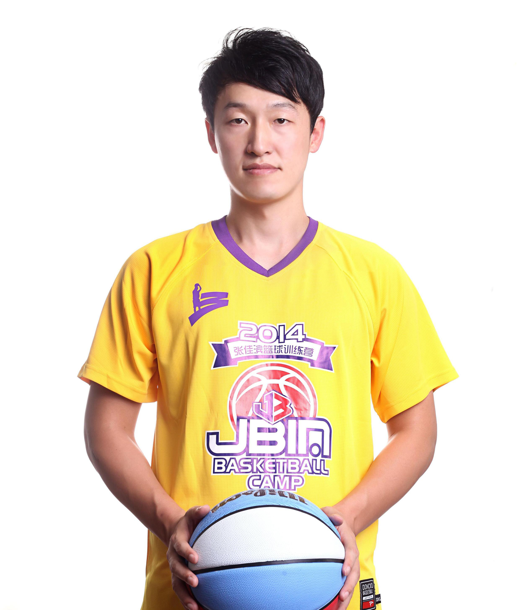

您的当前位置：首页 > 关于张佳滨
来 张佳滨了解一下
文章作者：admin 上传更新：2018-4-24

张佳滨，原华侨大学男篮主力球员。曾代表福建省参加全国农民运动会获男篮冠军，个人夺取当届农运会MVP及三分王。自2002年进入华侨大学男篮后，效力六年，帮助球队获得五届CUBA（中国大学生篮球联赛）总冠军，是当年球队标志——“华侨五虎”之一。因外线命中率极高的三分球被粉丝们亲切称为CUBA“神投手”。2008年，张佳滨带领华侨大学赢取第六个CUBA总冠军后功成身退，但依然以华侨大学男篮助理教练的身份活跃在CUBA的赛场。2008年至今，张佳滨活跃在CBO（中国业余篮球公开赛）赛场，已代表四支球队摘得四个总冠军、两个亚军，多次荣膺三分王、最有价值球员等称号。
球场上的张佳滨三分神准，“神投手”的美誉是最好的证明。然而天才的成功往往需要背后努力的付出，需要他多于常人的汗水与历练。
13岁，张佳滨刚刚接触篮球。那时候他还是个又矮又胖的小男孩，虽然痴迷篮球，练习也很刻苦，但他的球技并不算好。同伴们常常不愿意和他打球，原因就是怕他拖自己后腿。 不过他通过自己课余时间的默默练习，虽然球技不是那么出众，但还是摸索出一些打篮球的方法，尤其是投篮方面，命中率有了一定幅度的提升。18岁，高中联赛大展风采。进入华侨大学之后，张佳滨却在人才济济的大学篮球赛场遭遇挫折——先天条件并不出色的他没有被寄予太高的期望。但张佳滨并不气馁，他意识到机会是和能力成正比的。于是，他更加严格的要求自己，琢磨着如何提高球技。每天，他都会比别的队员早半个小时来到训练场地。训练结束之后，他还要留下来加练。
天道酬勤，功夫不负有心人。2002年11月，第五届CUBA联赛东南区决赛战中，张佳滨成了奇兵，全场命中5个三分球，贡献27分，帮助全队夺得分区冠军。全国总决赛，张佳滨继续神奇发挥，成为球队获胜的头号功臣。凭借不懈努力，张佳滨渐渐晋升球队主力，“神投手”“三分王”美称自此名扬CUBA赛场。
勤奋、执着、永不言弃，这是张佳滨，也是他标志性的“张三分”精神。“三分”背后“勤奋铸就传奇”的精神才是他想传达给更多热爱篮球的少年的。即使你不比别人高，不比别人壮，不比别人有天赋，但你依然有一颗热爱篮球执著的心！每一滴挥洒过的汗水都会是日后成功的见证，每一个勤奋刻苦的篮球少年都可以做自己心里的“神投手”！